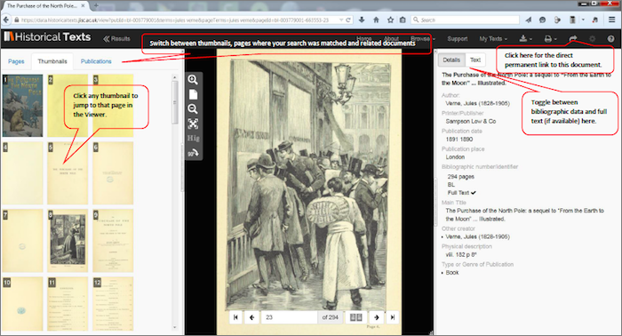
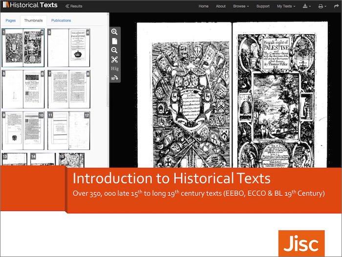

<div class="row">
    <div class="col-xs-12 topSpace">
        <div class="sideMenu">
            <div class="title">Support</div>
            <ul>
                <li class="selected"><a href="">Support home</a></li>
                <li><a href="/help/">Help file</a></li>
                <li><a href="/librarians/">Librarians</a></li>
                <li><a href="/faq/">FAQ</a></li>
            </ul>
        </div>

        <div class="support">

            <ol class="breadcrumb">
                <li class="active">Support Home</li>

            </ol>

            <h1>Support materials</h1>

            <h2>Introductory video</h2>
            
			<p>For a quick tour of the key features available please watch our short introductory video.</p>

            <iframe width="640" height="360" src="//www.youtube.com/embed/B1nO50Ks10w?rel=0&vq=hd720" frameborder="0" allowfullscreen></iframe>
            
            <h2>Quick reference guide</h2>

<p>To help you get started using Historical Texts you can download our <a href="http://historicaltexts.jisc.ac.uk/files/HT-QRGv1.pdf" target="_blank" title="Historical Texts Quick Reference Guide PDF"><b> Quick Reference Guide</b></a> (PDF, 858KB).</p>



<h2>Introduction to Historical Texts presentation</h2>

<p>An introduction to Historical Texts presentation is available as a <a href="http://historicaltexts.jisc.ac.uk/files/Introduction-to-Historical-Texts.pptx" target="_blank" title="Introduction to Historical Texts presentation"><b> PPT (7.4MB)</b></a> or a <a href="http://historicaltexts.jisc.ac.uk/files/Introduction-to-Historical-Texts-presentation.pdf" target="_blank" title="Introduction to Historical Texts presentation PDF"><b> PDF (6.4MB)</b></a> .</p>



<h2>Transition guides from EEBO or ECCO to Historical Texts</h2>
            <p>We understand that using a new platform for accessing EEBO and ECCO can take a bit of time to adjust to. For those of you who've used EEBO and ECCO via the content providers platforms previously, we've created a couple of short guides to assist you in locating the features you're familiar with.</p>
            <ul>
            <li><a href="http://historicaltexts.jisc.ac.uk/files/EEBO-to-HT-Transition-Guide.pdf" target="_blank" title="Transition from EEBO to Historical Texts user guide">Transition from EEBO to Historical Texts user guide</a> (PDF, 301KB)</li>
            <li><a href="http://historicaltexts.jisc.ac.uk/files/ECCO-to-HT-Transition-Guide.pdf" target="_blank" title="Transition from ECCO to Historical Texts user guide">Transition from ECCO to Historical Texts user guide</a> (PDF, 218KB)</li>
            </ul>
            
            <hr />
            
            <h2>Mobile friendly interface (in development)</h2>
            <p>We're keen to ensure researchers can use Historical Texts from whatever device they choose, be it a desktop, laptop, tablet or mobile phone. Rather than creating a separate app for mobile devices we're making the interface responsive, so it will resize according to the device you are accessing it from.</p>
            <p>There are two stages to this process: firstly to make the search and results screen mobile friendly, then secondly to make the viewer mobile friendly.</p>
			<p>The first stage is complete and we released the mobile friendly search and results screen in March 2015. For a quick demonstration of how this looks on a tablet and a mobile phone please see the short videos below.</p>
            <p>Tablet demo:</p>
            
            <iframe width="420" height="315" src="https://www.youtube.com/embed/GtN4ZC6Vxkw?rel=0&vq=hd720" frameborder="0" allowfullscreen></iframe>
            
            <p>Phone demo:</p>
    
    	<iframe width="420" height="315" src="https://www.youtube.com/embed/At8BtyumN8w?rel=0&vq=hd720" frameborder="0" allowfullscreen></iframe>
        </div>
        </div>
    </div>